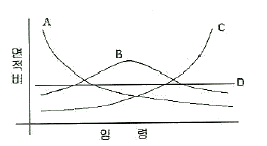
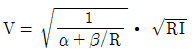

산림기사 (2006-08-16 기출문제)
1과목: 조림학
1. 환원법에 의한 발아력 검정을 잘못 설명한 것은?
- 활력이 있는 종자는 착색반응을 일으킨다.
- 휴면종자의 검사에도 사용할 수 있다.
- 온도가 낮을수록 반응이 빨리 일어난다.
- 테트라졸륨이나 테쿨루산칼륨 0.1 ~ 1.0% 수용액을 사용한다.
(정답률: 65%)

2. 다음 중 지존작업의 약제처리법에 사용되는 것이 아닌 것은?
- 염소산나트륨(NaClO3)
- 2.4 - D
- 에토펜프록스
- 근사미(글라신액제)
(정답률: 25%)
3. 다음 중 주피(珠皮)가 발달하여 형성과정에 영향을 미치는 것은?
- 종피
- 배유(배젖)
- 배강
- 배
(정답률: 73%)
4. 벌구의 임목 전부 혹은 경우에 따라서는 대부분을 일시에 벌채하는 방법은?
- 간벌
- 개벌
- 산벌
- 택벌
(정답률: 81%)
5. 다음 중 수목의 내음성과 가장 관련이 적은 인자는?
- 온도
- 고도
- 수령
- 내병성
(정답률: 79%)
6. 은행나무나 호도나무와 같은 대립종자의 파종에 가장 적합한 방법은?
- 점파(點播)
- 산파(散播)
- 조파(條播)
- 군파(群播)
(정답률: 83%)
7. 온대에 분포하는 수종의 광합성에 대한 설명 중 틀린 것은?
- 고산성 침엽수는 겨울에도 광합성 작용이 가능하다.
- 응엽은 양엽보다 낮은 광도에서 광포화가 일어난다.
- 잎은 기공을 닫고 난후 방에 CO2 고정을 한다.
- 잎에는 광합성에 관계하는 RuBP 효소가 가장 많다.
(정답률: 67%)
8. 다음 중 왜림작업으로 알맞은 것은?
- 참나무류, 아카시아나무 등의 땔감 생산
- 삼나무의 목재 생산
- 밤나무의 열매 생산
- 소나무의 송이버섯 생산
(정답률: 78%)
9. 수목의 광보상정을 가장 잘 설명한 것은?
- 호흡에 의한 CO2 방출량과 광합성에 의한 CO2 흡수량이 동일하다.
- 호흡에 의한 CO2 방출이 최대이다.
- 광합성에 의한 CO2 흡수다 최대이다.
- 수목은 20,000~80,000lux에서 이루어진다.
(정답률: 79%)
10. 다음의 치환성염기중 토양콜로이드에 치환∙흡착하는 힘이 가장 큰 것은?
- Ca++
- Mg++
- K+
- Na+
(정답률: 67%)
11. 다음에 제시된 수종들 중에서 일반적으로 파종 1년 후에 판갈이작업을 실시하는 것이 좋은 수종으로만 짝을 지은 것은?
- 소나무, 낙엽송
- 소나무, 잣나무
- 전나무, 독일가문비나무
- 삼나무, 주옥
(정답률: 48%)
12. 가지치기 작업의 영향으로 잘못 설명된 것은?
- 높이자람이 억제된다.
- 연륜폭이 조절되어 줄기의 완만도를 높인다.
- 하옥의 수광량을 높녀 그 자람을 촉진시킨다.
- 줄기에 부정아가 발생하는 일이 있다.
(정답률: 73%)
13. 천연갱신에 관한 설명 중 바른 것은?
- 실행이 용이하고 숲이 빠르게 성립
- 조림지 토양생태계 변화로 환경의 퇴화
- 노동력과 비용의 집중 및 대규모 소요
- 임옥이 환경에 적응되어 숲 조성의 실패 가능성 희박
(정답률: 75%)
14. 활엽수인 경우 잡목 솎아베기의 효과를 높일 수 있는 적합한 작업시기는?
- 3 ~ 5월
- 6 ~ 8월
- 9 ~ 10월
- 12 ~ 2월
(정답률: 50%)
15. 복층림 조성의 장점이 아닌 것은?
- 임목의 수확 기간이 길어져서 대경목 생산이 가능하다.
- 생장이 균일하여 연륜폭이 균일하고 치밀한 목재를 생산할 수 있다.
- 임내의 토양유실, 침식 등의 작용은 증가한다.
- 풍치를 유지할 수 있다.
(정답률: 74%)
16. 규칙적인 식재에서 ha 당 묘목의 본수는 묘목1본당 면적과 식재면적을 통하여 산출한다. 묘간거리가 가로 1m, 세로 2m 의 장방형 식재시 1ha에 식재되는 묘목의 본수는?
- 5,000본
- 3,333본
- 3,000본
- 2,500본
(정답률: 61%)
17. 산림토양의 물리적 성질을 결정하는 인자가 아닌 것은?
- 토양입자
- 토성
- 토양산도
- 토양공극
(정답률: 78%)
18. 윤벌기가 완료되기 전에 갱신이 완료되는 전갱작업(前更作業)에 해당되는 것은?
- 모수작업
- 개벌작업
- 산벌작업
- 택벌작업
(정답률: 50%)
19. 다음 중 자웅이주가 아닌 수종은?
- 은행나무
- 호랑가시나무
- 가죽나무
- 삼나무
(정답률: 37%)
20. 다음 중 삽목 발근이 어려운 수종은?
- 밤나무
- 모과나무
- 삼나무
- 무궁화
(정답률: 30%)
2과목: 산림보호학
21. 보통 세균의 그램 염색시 그램 양성균의 색깔은?
- 녹색
- 보라
- 흰색
- 노랑
(정답률: 62%)
22. 연해(煙害)의 방제법으로 가장 옳은 것은?
- 연해의 염려가 있는 곳은 숲을 교림()으로 한다.
- 토양관리에 힘쓰며 특히 석회질비료를 주어야 한다.
- 공해업소의 굴뚝 높이는 10m 이상이면 된다.
- 질소를 사용하여 연해 물질을 흡수 중화시킨다.
(정답률: 53%)
23. 소나무종은 유충과 성충이 모두 소나무에 피해를 가하는데, 주로 신성충이 피해를 주는 장소는?
- 소나무 잎
- 소나무 뿌리
- 수간 밑부분
- 소나무 신초 속
(정답률: 64%)
24. 해충의 발생과 피해의 평가시에 단시간 내에 넓은 면적을 조사할 수 있어 피해의 조기발견 및 비용의 절약이 가능한 조사 방법은?
- 축차조사
- 항공조사
- 공간조사
- 수관부조사
(정답률: 81%)
25. 다음 중 전염성병의 원인은?
- 부적당한 토양 조건
- 마이코플라스마
- 대기오염
- 부적당한 기상 조건
(정답률: 50%)
26. 연해(煙害)의 감정 중 육안적 감정법이 아닌 것은?
- 묵은 잎부터 순차적으로 떨어지는 것이 특징이다.
- 연해를 받은 나무는 반드시 나무의 끝부분부터 피해를 받아 피해가 수관의 하부로 내려온다.
- 수종과 시기에 따라서, 대개 회록색의 연반으로 시작하여 갈색 또는 적갈색으로 변한다.
- 엽록체가 회색 또는 회백색으로 표백된다.
(정답률: 40%)
27. 볕데기(sun-scorch)가 잘 일어나지 않는 경우는?
- 수피가 평활하고 코르크층이 발달되지 않은 수종
- 서남향이나 서향에 있는 수목
- 삼림울폐가 갑자기 깨어졌을 때
- 정자나무 같이 수간 하부까지 지엽이 번성한 고립목
(정답률: 78%)
28. 다음 중 염풍(salt wind)에 가장 약한 수종은?
- 해송, 돈나무
- 팽나무, 후박나무
- 자귀나무, 사철나무
- 삼나무, 벚나무
(정답률: 58%)
29. 일반적으로 솔잎혹파리의 발생 횟수는?
- 년 1회
- 년 2회
- 년 3회
- 년 4회
(정답률: 58%)
30. 다음 해충 중 알로 월동하지 않는 것은?
- 박쥐나방
- 매미나방
- 어스렝이나방
- 미국흰불나방
(정답률: 67%)
31. 나무좀, 하늘소, 바구미 등은 쇠약목에 유인되므로 벌목한 통나무 등을 이용하는 기계적 구제방법은?
- 식이유살법
- 잠복소유살법
- 번식처유살법
- 등화유살법
(정답률: 60%)
32. 다음 중 삼림화재 시 내화력(耐火力)이 가장 약한 수종으로 묶인 것은?
- 소나무, 녹나무
- 화백, 아왜나무
- 사철나무, 희양목
- 은행나무, 대왕송
(정답률: 72%)
33. 수목의 자연개구부(기공)감염을 하는 병원균은?
- 소나무잎떨림병균
- 밤나무줄기마름병균
- 근두암종병균
- 낙엽송끝마름병균
(정답률: 60%)
34. 다음 중 밤나무혹벌의 월동 형태로 가장 적당한 것은?
- 알로 월동
- 유충으로 월동
- 성충으로 월동
- 번데기로 월동
(정답률: 74%)
35. 유충과 성충이 모두 나무의 잎을 가해하는 해충은?
- 오리나무잎벌레
- 솔잎혹파리
- 밤나무혹벌
- 독나방
(정답률: 67%)
36. 감수성(感受性)인 식물을 이용하여 병을 진단하는 방법은?
- 육안 및 현미경 진단법
- 이화학적 진단법
- 혈청학적 진단법
- 생물학적 진단법
(정답률: 69%)
37. 다음 중 선충의 동물 분류학상의 위치는?
- 편형동물문
- 강장동물문
- 선형동물문
- 윤형동물문
(정답률: 71%)
38. 보르도액을 조제할 때 주의해야 할 사항 중 틀린 것은?
- 금속제 용기(容器)를 사용한다.
- 생석회액(석회유)에 황산동액을 섞는다.
- 양쪽 용액을 혼합할 때 강하게 휘저어 준다.
- 보르도액은 사용하기 직전에 만들어 사용한다.
(정답률: 50%)
39. 소나무 잎떨림병균이 월동하는 곳은?
- 땅 위에 떨어진 병든 잎
- 소나무 뿌리
- 소나무 줄기
- 중간기주
(정답률: 60%)
40. 잣나무 털녹병에 걸린 잣나무의 병환부에 4 ~ 5월경에 나타나는 노랑(오렌지색)가루는?
- 녹포자
- 여름포자
- 겨울포자
- 소생지
(정답률: 41%)
3과목: 임업경영학
41. 말구직경 20cm, 원구직경 42cm, 재장 8m인 통나무의 재적을 스마리안(Smalian)식으로 계산한 값으로 가장 적합한 것은? (단, π=3.141)
- 약 0.5793m3
- 약 0.6796m3
- 약 0.7792m3
- 약 0.4796m3
(정답률: 60%)
42. 재적수확 최대의 벌기령과 밀접한 관계가 있는 것은?
- 정기생장량
- 총평균생장량
- 연년생장량
- 정기평균생장량
(정답률: 72%)
43. 소나무 원목의 1m3당 시장 가격이 300,000dnjs 1m3당 생산비용이 100,000원, 조재율70%, 투하 자본의 회수기간이 5개월, 자본의 월이율이 4%, 기업 이익률이 30% 라고 할 때, 1m3당 임목가는? (단, 시장가역산법을 적용하여 계산하시오.)
- 55,000원
- 70,000원
- 95,000
- 125,400원
(정답률: 75%)
44. 면적당 임목의 현존량 측정시 가장 먼저 할 일은?
- 조사구 설정
- 조사목 선정
- 조사목의 중량측정
- 임분의 현존량 추정
(정답률: 67%)
45. 임목기망가를 응용할 수 없는 경우는?
- 토지매각시 토지에 대한 투자비용을 찾을 때
- 임목의 성숙기를 결정할 때
- 미숙한 임목을 임지와 함께 매도할 때
- 임목의 벌채 또는 피해에 대한 손해배상액의 결정시
(정답률: 31%)
46. 산림경리 업무의 후업(後業)에 속하는 것은?
- 시업체계의 조직
- 시업관계 사항 조사
- 시업상 필요한 시설계획
- 시업의 조사(調査), 검정
(정답률: 75%)
47. 다음 중 육림비의 구성에 해당하지 않는 것은?
- 재료비
- 노동비
- 자본이자
- 단위재적량의 채취비
(정답률: 43%)
48. 소반 설정의 조건 중 틀린 것은?
- 지종 구분이 상이할 때
- 입목지 및 미입목지
- 천연계 즉 하천, 도로, 방화선
- 임령 및 지위의 차이가 현저할 때
(정답률: 53%)
49. 수확조정 방법에 있어 조사법에 대한 설명으로 틀린 것은?
- 직접 연년생장량을 측정하여 다음 경리기간의 수확량으로 한다.
- 현실적으로 거의 개벌작업에 적용하고 있다.
- 경영자의 경험에 의하기 때문에 고도의 기술적 숙련을 필요로 하는 문제점이 있다.
- 자연법칙을 존중하면서 임업의 경제성을 높이고 다량의 목재생산을 지속하려는 방법이다.
(정답률: 53%)
50. 복합임업경영의 주된 목적으로 가장 적합한 것은?
- 임업 주수입의 증대
- 임업 조수입의 증대
- 임업수입의 조기화와 다양화
- 임업경영지의 대단지화
(정답률: 71%)
51. 다음 중 휴양의 특질과 가장 거리가 먼 것은?
- 노동과 관련이 없어야 한다.
- 자유로운 선택이어야 한다.
- 학습의 효과가 있어야만 한다.
- 즐거우며 재충전의 편익이 있어야 한다.
(정답률: 60%)
52. 법정축적법의 kamaraltaxe법에 의하여 수확조정을 하고자 할 때 표준연벌채량 계산인자가 아닌 것은?
- 현실축적
- 갱정기
- 경리기외 편입기간
- 법정축적
(정답률: 58%)
53. 다음 중 현실성장량이 아닌 것은?
- 연년성장량
- 정기성장량
- 벌기성장량
- 벌기평균성장량
(정답률: 58%)
54. 다음 그림과 같은 4가지 형태의 산림의 구조 중 여러 계층의 임목이 골고루 이상적인 구성을 하고 있어서 보속생산이 가능한 산림구조는?

- A형 산림구조
- B형 산림구조
- C형 산림구조
- D형 산림구조
(정답률: 44%)
55. 영림계획의 운용과정을 순서대로 바르게 나타낸 것은?
- 영림계획 - 조사업무 - 연차계획 - 사업예정 - 사업실행
- 연림계획 - 연차계획 - 조사업무 - 사업예정 - 사업실행
- 영림계획 - 연차계획 - 사업예정 - 조사업무 - 사업실행
- 영림계획 - 연차계획 - 사업예정 - 사업실행 - 조사업무
(정답률: 28%)
56. 자산은 기업에 머무는 기간의 길이 또는 유동성에 따라 유동자산과 고정자산으로 나누어진다. 다음 중 고정자산이 아닌 것은?
- 임도
- 산림관리 사무실
- 숯가마
- 매각용 묘목
(정답률: 87%)
57. 다음 중 수렵허가를 받을 수 있는 자는?
- 미성년자
- 심신상실자 및 그 밖에 이에 준하는 정신장애인
- 수렵면허가 취소된 날부터 1년이 경과되지 아니한 자
- 이 법을 위반하여 금고 이상의 실형을 선고받고 그 집행이 면제된 날부터 2년 6개월이 경과된 자
(정답률: 72%)
58. 어떤 임지는 육림용으로 사용할 수도 있고, 목축용으로 사용할 수도 있다. 이때 임지를 육림용으로 사용하려면 목축용으로 사용하므로써 얻을 수 있는 수익을 포기해야 하는데 이때 발생하는 원가를 무엇이라 하는가?
- 매몰원가(sunk costs)
- 한계원가(marginal coast)
- 증분원가(incremental costs)
- 기회원가(opportunity costs)
(정답률: 80%)
59. 산림 측정 단위의 설명 중 틀린 것은?
- 1cu.ft = 1 foot x 1 foot x 1 foot
- 1평(坪) = 6척(尺) x 6척(尺)
- 1재(才) = 3cm x 3cm x 3cm
- 1m3 = 299 4재(才)
(정답률: 42%)
60. 다음 중 임업소득 계산으로 옳은 것은?
- (임업조수익 - 임목생장액)
- (임업조수익 - 임업경영비)
- (임업조수익 - 임업생산 가계소비액)
- (임업조수익 - 감가상각비)
(정답률: 69%)
4과목: 임도공학
61. 임도 노선 설치시 단곡선에서 교각 [I.A]이 30° 31‘00“이고 곡선반지름(R)이 150m 일 때 접선길이 (T.L)는?
- 약 15m
- 약 21m
- 약 35m
- 약 41m
(정답률: 28%)
62. 다음 중 임도의 중단선형을 구성하는 요소는?
- 종단곡선
- 직선
- 단곡선
- 완화곡선
(정답률: 45%)
63. 산림법령상 임도시설기준의 합성기울기로 가장 옳은 것은? (단, 지형여건이 불가피한 경우를 제외)
- 원칙적으로 12% 이하로 한다.
- 지선임도는 13% 이하로 한다.
- 간선임도는 15% 이하로 한다.
- 원칙적으로 14% 이하로 한다.
(정답률: 78%)
64. 장마기가 지난 후 옆도랑과 빗물받이의 토사를 제거하고자 할 때 가장 적합한 작업 기계는?
- 진동 로울러
- 모터 그레이더
- 소형 불도저
- 소형 백호우
(정답률: 80%)
65. 임도에서 반향곡선(反向曲線)을 설치하는 목적이 아닌 것은?
- 임도의 거리를 단축한다.
- 임도 경사를 완화한다.
- 교통의 안전을 확보한다.
- 목재 운반의 위험도를 줄인다.
(정답률: 71%)
66. 임도를 통과시켜야 하라 A점과 B점간의 표고 차이가 400m이고, 도상(1/25000)거리가 20cm 이었을 경우 종단경사를 몇 %로 한 예정선을 삽입시킬 수 있는가?
- 4%
- 8%
- 12%
- 16%
(정답률: 56%)
67. 본 바닥의 토질이 모래인 지역에 임도를 개설할 경우 흙깎기 비탈면의 울매는 어느 정도로 하는 것이 가장 적합한가?
- 0.3 ~ 0.8%
- 0.5 ~ 1.0%
- 0.8 ~ 1.2%
- 1.5% 이상
(정답률: 18%)
68. 차도너비(width of carriage way)란?
- 유효너비와 길어깨너비의 합
- 차량이 지나가는데 쓰이는 부분의 너비
- 길어깨너비와 옆도랑 너비의 합
- 유효너비와 비탈면의 합
(정답률: 32%)
69. 다음 중 임도건설이 끼칠 수 있는 악영향으로 관련이 적은 것은?
- 야생동식물이 이동하는 통로가 단절된다.
- 야생동물과 희귀식물의 서식처가 파괴된다.
- 단위 면적 당 임목 생장량이 급감한다.
- 성토부 흙이 참식되어 계곡수가 오염된다.
(정답률: 72%)
70. 임도밀도에 대한 설명 중 맞는 것은?
- 임도밀도란 임도 간격을 산림면적으로 나눈 것이다.
- 임도밀도가 높으면 공사비가 높아 산림개발도가 낮아진다.
- 임도밀도가 높으면 산림개발도가 높다.
- 국유림 임도밀도는 대체로 민유림보다 높다.
(정답률: 65%)
71. 성토사면에 있어서 소단에 대한 설명으로 적절치 않은 것은?
- 성토의 안정성을 높인다.
- 소단의 폭은 3 ~ 4m가 좋다.
- 유지보수작업을 할 때 작업원의 발판으로 이용한다.
- 사면에서 흘러내리는 사면침식의 진행을 방지한다.
(정답률: 85%)
72. 산림법령상 임도에 있어서 지선임도의 설계속도는?
- 90 ~ 80km/시간
- 70 ~ 60km/시간
- 50 ~ 40km/시간
- 30 ~ 20km/시간
(정답률: 67%)
73. Matthews의 적정 임도밀도 이론으로 옳은 것은?
- (임도 개설비 + 유지관리비 + 집재 비용)의 합계가 최소가 되는 점의 임도밀도
- (임도 개설비 + 유지관리비 + 집재 비용)의 합계가 최대가 되는 점의 임도밀도
- (임도 개설비 + 유지관리비 + 운재 비용)의 합계가 최소가 되는 점의 임도밀도
- (임도 개설비 + 유지관리비 + 운재 비용)의 합계가 최대가 되는 점의 임도밀도
(정답률: 53%)
74. 산림법령상 설계속도가 40km/시간인 일반지형에서의 임도 적정 종단기울기는?
- 5% 이하
- 7% 이하
- 9% 이하
- 12% 이하
(정답률: 56%)
75. 다음 중 배수로 공사에 사용되는 용어에 대한 설명으로 틀린 것은?
- 물의 입자가 연속하여 움직이고 있는 상태를 수류라 한다.
- 물의 흐름을 직각으로 자른 횡단면적을 유적이라 한다.
- 배수로의 횡단면에서 물과 접촉하는 배수로 주변 길이를 윤변이라 한다.
- 유적을 윤변으로 나눈 것을 경변이라 한다.
(정답률: 35%)
76. 다음 중 임도설계시 예정공정표에 작성할 사항이 아닌 것은?
- 작업의 난이도
- 작업인원의 동원 가능 상태
- 계절적인 조건
- 인부단가비
(정답률: 48%)
77. 다음 산림토목 공사용 기계 중 토사 굴착에 적합하지 않은 것은?
- 트리 도우저(tree dozer)
- 불도우저(buudozer)
- 트랙터 셔블(tractor shovel)
- 백호우(backhoe)
(정답률: 53%)
78. 임도계획선에 인접된 작은 계곡에서 이른바 구곡침식(gully erosion)이 심할 때, 이것을 안정시키기 위한 가장 적합한 계간 공작물은?
- 편책 기슭막이
- 돌망태 골막이
- 떼 누구막이
- 콘크리트 옹벽
(정답률: 69%)
79. 1차선임도에 있어서 대피소(待避所)의 주 설치 목적은?
- 차량이 쉬었다 가기 위해서
- 공중 공습을 피하기 위해서
- 차량이 서로 비켜 가기 위해서
- 차량이 짐을 싣고 내리기 위해서
(정답률: 73%)
80. 다음 중 일반적인 콘크리트 양생에 도움이 되지 않는 것은?
- 콘크리트를 친 후 가마니를 적셔서 덮어 놓는다.
- 겨울에는 콘크리트 구조물 주위에 불을 피워 놓는다.
- 콘크리트 양생중에 로라로 자주 다져준다.
- 때때로 물을 뿌려준다.
(정답률: 48%)
5과목: 사방공학
81. 비탈면 녹화공법의 목적이 아닌 것은?
- 경관미의 조속한 회목
- 조림을 위한 지존작업
- 도로 외부로부터의 교통장애요인의 저지
- 인위적으로 훼손된 비탈면을 빠르고 안전하게 피복하여 침식 및 붕괴현상의 방지
(정답률: 66%)
82. 사방공사에서 찰쌓기 공법으로 많이 사용되는 석재는?
- 야면석
- 잡석
- 견치돌
- 막깬돌
(정답률: 42%)
83. 유량이 적고 물매가 비교적 급한 산비탈에 막깬돌, 잡석등을 붙여 축설하는 수로는?
- 찰붙임수로
- 매붙임수로
- 속도랑배수구
- 바자수로
(정답률: 48%)
84. 사면 붕괴와 산사태 발생 원인 중 자연적 요인에 속하는 것은?
- 강수에 의한 지표수 유출
- 임도 공사시 성토면 붕괴
- 채석장 법면의 사면 절취
- 모두베기 작업에 의한 산지 침식
(정답률: 86%)
85. 우량계가 유역에 불균등하게 분포되었을 경우 평균 강우량 측정 방법은?
- Thiessen법
- 산술평균법
- 등우선법
- 침투형법
(정답률: 66%)
86. 계류의 유속과 방향을 조절할 수 있도록 둑이나 계안으로부터 돌출하여 설치하는 사방공작물은?
- 구곡막이
- 바닥막이
- 기슭막이
- 수제
(정답률: 64%)
87. 돌을 쌓아 올릴 때 모르타르를 사용하지 않고 쌓는 방법은?
- 찰쌓기
- 메쌓기
- 보쌓기
- 잡쌓기
(정답률: 74%)
88. 철근 콘크리트에 사용하는 세골재(모래)로서 적합하지 않은 것은?
- 냇모래
- 강모래
- 산악천모래
- 바다모래
(정답률: 58%)
89. 다음 공법 중 형식이 다른 하나는?
- 선떼붙이기 공법
- 새심기공법
- 편떼심기공법
- 점파공법
(정답률: 67%)
90. 다음 중 사반댐의 형식이 아닌 것은?
- 직선중력댐
- 아치댐
- 삼차원댐
- 수평식댐
(정답률: 20%)
91. 사방댐의 위치와 방향이 옳은 것은?
- 계상 및 양안에 암반이 존재하지 않아야 한다.
- 일반적으로 상류부는 좁고, 댐의 위치는 넓어야 한다.
- 붕괴지 및 다량의 계상퇴적물이 존재하는 지역의 상부에 한다.
- 두 곳의 지유가 만나는 합류지역의 하류부에 한다.
(정답률: 60%)
92. 평균 유속 산정에 이용되는 Bazin 구공식

에서, 황폐류나 야계사방에 주로 이용되는 조도계수 α, β의 값은 얼마인가?- α = 0.0004, β = 0.0007
- α = 0.004, β = 0.007
- α = 0.04, β = 0.07
- α = 0.4, β = 0.7
(정답률: 43%)
93. 녹화파종공법을 시행할 때 파종량의 산출에 대하여 바르게 설명한 것은?
- 파종량의 결정은 발생기대본수와 비례관계에 있다.
- 파종량의 결정은 평균입수와 비례관계에 있다.
- 파종량의 결정은 순량율은 비례관계에 있다.
- 파종량의 결정은 발아율과 비례관계에 있다.
(정답률: 75%)
94. 다음 중 수제(水制)의 높이를 결정할 때 고려되어야 할 사항으로 가장 거리가 먼 것은?
- 유수의저항
- 유수의 전석(轉石)
- 하상(河床)의 변화
- 하상의 크기
(정답률: 39%)
95. 산사태(landslide)와 산붕(landslip)에 대한 설명 중 틀린 것은?
- 산붕은 산사태와 같은 기구로 발생하지만 일반적으로 산사태보다 규모가 작고 산정부에서 많이 발생한다.
- 산사태는 주로 호우의 원인에 의하여 산정에서 가까운 산복부에서 발생한다.
- 산사태는 지괴(地塊)가 융해, 팽창되너 일시에 계곡, 계류를 향햐여 연속적으로 길게 붕괴하는 것이다.
- 산사태는 비교적 산지 경사가 급하고 토층 바닥에 양받이 깔린 곳에 많이 발생한다.
(정답률: 40%)
96. 계속되는 강우로 인하여 토층이 포화상태가 되면서 산지 전면에 걸쳐 얇은 층으로 토양이 이동하는 침식은?
- 우격침식
- 면상침식
- 누구침식
- 구곡침식
(정답률: 74%)
97. 산복사방의 목표와 거리가 먼 것은?
- 표토 침식의 방지
- 붕괴의 확대 방지
- 종횡침식의 방지
- 산사태 위험지 예방
(정답률: 50%)
98. 침식지형의 정지공사시 단끊기에 대하여 맞는 것은?
- 계단 나비는 일반적으로 30cm로 한정 한다.
- 비탈 다듬기를 한 후 1 ~ 2회 비를 맞은 다음에 한다.
- 하부에서 상부로 단을 끊어 간다.
- 산비탈 방향으로 온전히 수평으로 만들 필요가 없다.
(정답률: 29%)
99. 황폐계천의 설명 중에서 틀린 것은?
- 게상 물매가 급하다.
- 유로의 길이가 길다.
- 강우나 융설 등에 의해 유량이 급격히 증가한다.
- 호우시에는 다량의 유수와 사력이 단시간에 내려온다.
(정답률: 72%)
100. 유량이 400m3/sec 이고, 평균유속이 5m/sec 이며, 수로횡단면의 형상 및 크기가 일정할 때 수로횡단면적은?
- 5m2
- 6m2
- 7m2
- 8m2
(정답률: 66%)